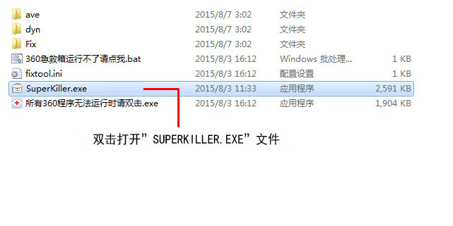
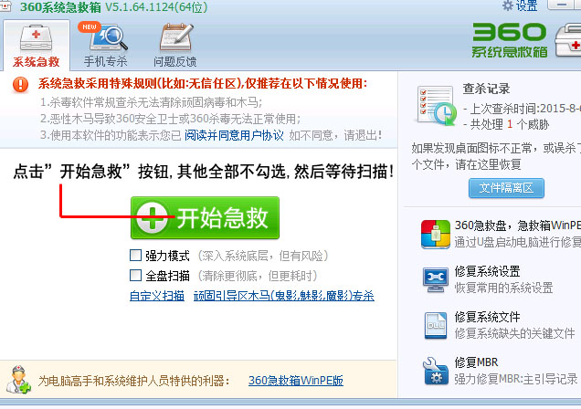
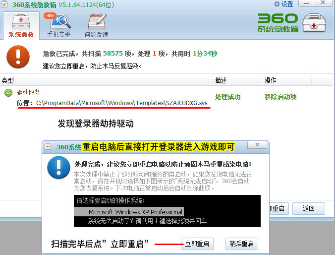

解决打不开登录器、点开登陆器没有反应
前言：目前网络劫持严重。大部分玩家打开没有授权的传奇登录器被捆绑劫持插件。
导致玩家无法正常游戏，为了保证玩家正常游戏，推出临时解决方案，玩家可以按步骤操作。
1.下载360急救箱 https://www.360.cn/jijiuxiang/index.html 到桌面。鼠标右键点击“360急救箱”，选择“解压到360急救箱”。
2.双击打开"360急救箱文件夹"
3.打开文件夹里的“点我开始清理登录器劫持.exe”程序。

4.点击“开始急救”按钮，其他上什么都不用点。

5.发现登录器劫持驱动,处理。选择立即重启。重启后直接打开登录器即可进入游戏。
